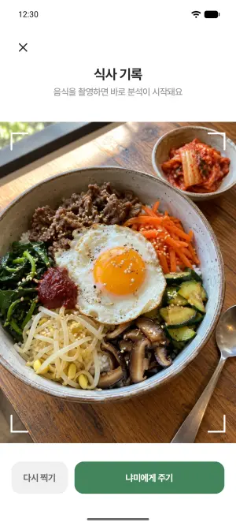

-

写真1枚撮るだけでAIが記録
ごはんの写真を1枚撮るだけで、AIがカロリーとPFCバランスを自動で記録。
-
ニャミの姿
食べ方で変わるニャミ
抜くとほっそり、食べすぎるとふっくら。ちょうどよく食べるとぴったりの姿に。
-
ごほうび
もぐもぐ演出とお部屋作り
ごはんを記録するともぐもぐシーンが見られて、お部屋を飾るごほうびが届くよ。
-
ウィジェット
ホーム画面で待つニャミ
スマホを開くたび、ホーム画面のウィジェットでニャミがちょこんと待ってるよ。

今日の一食から、
ニャミと一緒にやさしく始めてみませんか？
Google Playで手に入れよう
App Store 近日公開
iPhoneをお使いの方も少しだけお待ちくださいね。App Storeでの配信も準備中です。